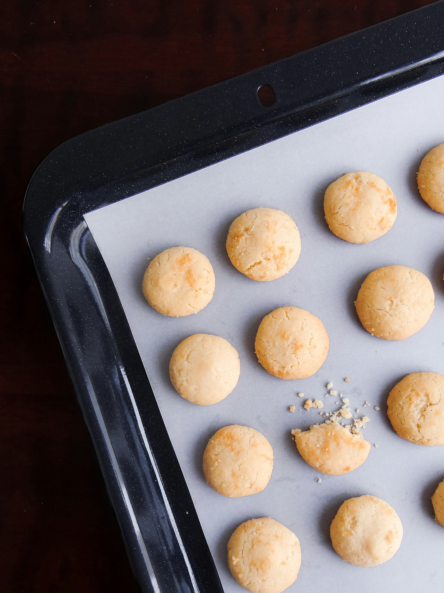

Coconut Cookies

Ingredients
- 1 1/4cups all-purpose flour
- 1/2 teaspoon baking soda
- 1/4 teaspoon salt
- 1/2 cupp butter
- 1/2 cup packed brown sugar
- 1/2 cup white sugar
- 1 egg
- 1/2 teaspoon vanilla extract
- 2 cups flaked coconut
- Gather the ingredients. Preheat the oven to 350 degrees F (175 degrees C).
- Combine flour, baking soda, and salt together in a medium bowl; set aside.
-
Beat butter, brown sugar, and white sugar together in a large bowl with an electric
mixer until smooth. Add egg and vanilla; beat until light and fluffy.
- Gradually blend in flour mixture, then stir in coconut until well combined.
- Drop dough by teaspoonfuls onto ungreased cookie sheets, about 3 inches apart.
-
Bake in the preheated oven until golden brown, about 8 to 10 minutes. Allow cookies to
cool briefly on the baking sheet before transferring them to a wire rack to cool
completely.
- Serve and enjoy!